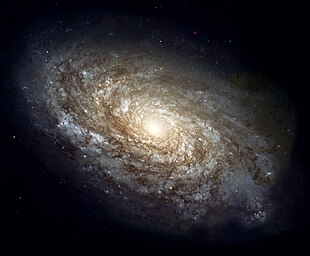

هکشانها سامانههایی بزرگ و با اندازه و مرز مشخصی هستند که از ستارهها، ستاره فشرده، ماده تاریک، غبار کیهانی و گرد و غبارهای میان ستارهای تشکیل شدهاند و با نیروهای گرانشی به گردِ هم آمدهاند.[۱][۲] کوچکترین کهکشانها دارای پهنایی برابر با چند صد سال نوری، شامل نزدیک به صد میلیون (۱۰۸) ستاره هستند. بزرگترین کهکشانها تا ۳ میلیون سال نوری پهنا دارند و شامل بیش از صد تریلیون (۱۰۱۴) ستاره هستند.[۳] کهکشانها بر گرد مرکز جرم خود در گردشاند. بیشتر جرم یک کهکشان معمولی به شکل ماده تاریک است و تنها چند درصد از آن جرم به شکل ستارهها و سحابیها قابل مشاهده است. سیاهچالههای کلانجرم یک ویژگی مشترک در مرکز کهکشانها هستند. در گذشته برخی اجرام آسمانی غیرستارهای (مانند M31)، به عنوان سحابیهای مارپیچی شناخته میشدند. بعداً معلوم شد که این اجرام در واقع تودههایی عظیم از ستارهها هستند. هنگامی که کمکم فاصلهٔ واقعی این اجرام مشخص شد، آنها را island universes (جهانهای جزیرهای) نامیدند. بعد از مدتی واژهٔ universe برای اشاره به همهٔ عالم به کار رفت و عبارت فوق کاربردش را از دست داد و اجرام مزبور galaxy نامیده شدند. امروزه در متون اخترشناسی، واژه Galaxy با حرف G بزرگ برای اشاره به کهکشان راه شیری و واژهٔ galaxy برای اشاره به کهکشان به صورت عام به کار میرود.[۱۰] بزرگی، ویژگیها، ریختشناسی و دستهبندی کهکشانها از دید بزرگی و شمار ستارهها دارای طیف گستردهای هستند، کهکشانهای کوتوله نزدیک ۱۰ میلیون ستاره[۱۱] و کهکشانهای غول آسا تا سقف ۱۰۰ تریلیون ستاره[۱۲] دارند.[۱۳] کلیه ستارگان یک کهکشان در مدار خود، به دور مرکز جرم کهکشان میگردند. کهکشانها ممکن است از چندین سامانه ستارهای، خوشههای ستارهای و ابرهای میانستارهای گوناگون تشکیل شده باشند. شکلهای مختلف کهکشانها بر پایه شیوهای دستهبندی میشود که بر پایه شیوه دستهبندی ستارهشناس آمریکایی، ادوین هابل (۱۸۸۹–۱۹۵۳)، شکل یافته اس